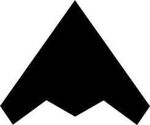

exploring new frontiers
exploring new frontiers
vaishnav potlapalli
Currently building ai agents for content discovery.
i work on llms, computer vision & ai agents, love astronomy, dota 2, and all things sci-fi.
experience
- founding engineer — stealth ai 2025–now
- research assistant — mbzuai 2022–2023
selected papers
education
- m.s. — new york university 2023–2025